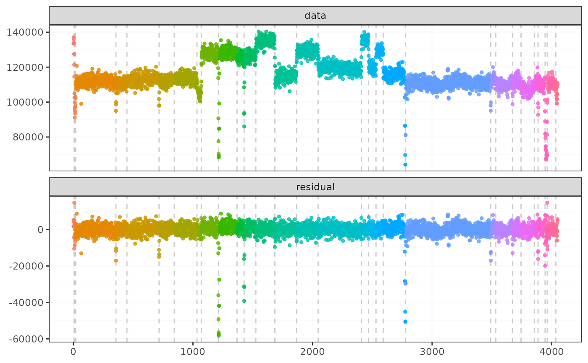
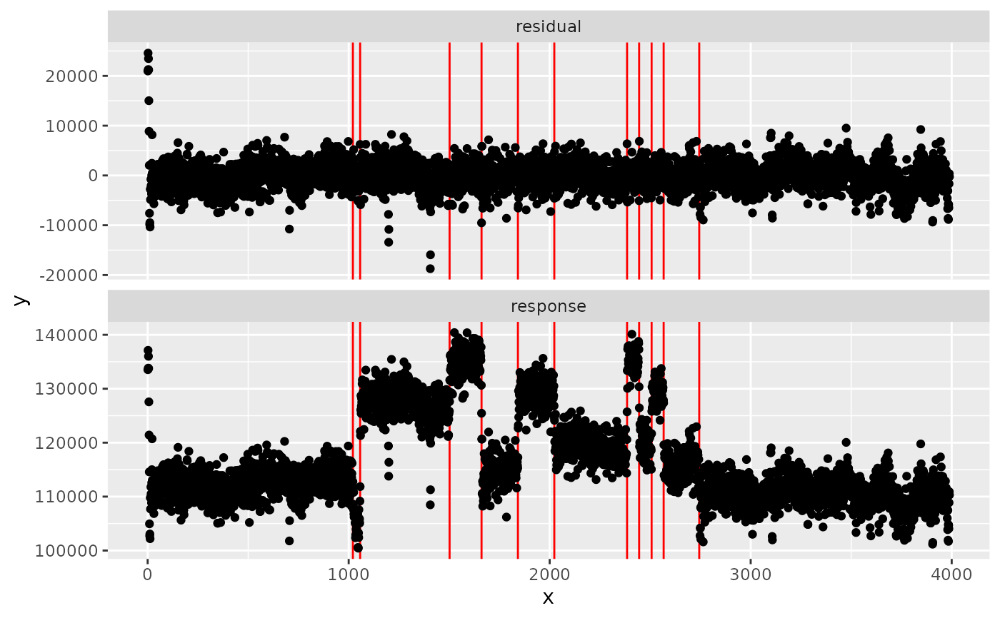

Well-log Dataset from Numerical Bayesian Methods Applied to Signal Processing
Source:R/data.R
well_log.RdThis is the well-known well-log dataset used in many changepoint papers obtained from Alan Turing Institute GitHub repository and licensed under the MIT license.
Examples
result <- fastcpd.mean(well_log, trim = 0.001)
summary(result)
#>
#> Call:
#> fastcpd.mean(data = well_log, trim = 0.001)
#>
#> Change points:
#> 7 19 356 448 717 844 1034 1070 1215 1369 1428 1526 1685 1866 2047 2409 2469 2531 2591 2777 3490 3533 3672 3744 3855 3886 3945 3963 4035
#>
#> Cost values:
#> 16.91676 38.86712 210.3847 68.36128 179.7825 78.94805 95.02146 23.20542 713.0629 1077.902 139.2378 292.0271 89.21581 105.3906 100.7872 174.6923 25.33967 31.33531 21.49939 893.0716 576.5011 62.34357 72.94392 65.09989 55.41323 36.90478 134.989 57.99145 51.65122 17.6364
#>
#> Parameters:
#> segment 1 segment 2 segment 3 segment 4 segment 5 segment 6 segment 7
#> 1 131889 99849.77 112027.4 110326.7 112927.9 111704.2 113602.4
#> segment 8 segment 9 segment 10 segment 11 segment 12 segment 13 segment 14
#> 1 105619.2 126801.8 126664.1 124647.5 125292.5 134977.4 114811.5
#> segment 15 segment 16 segment 17 segment 18 segment 19 segment 20 segment 21
#> 1 129263.3 119356.9 135435.4 119580.8 129117.2 114845.8 110800.3
#> segment 22 segment 23 segment 24 segment 25 segment 26 segment 27 segment 28
#> 1 112094.9 110050.3 111688.1 107527 111524.8 108912.4 73923.62
#> segment 29 segment 30
#> 1 110564.8 105222.2
plot(result)

# \donttest{
if (requireNamespace("matrixStats", quietly = TRUE)) {
sigma2 <- variance.median(well_log)
median_loss <- function(data) {
sum(abs(data - matrixStats::colMedians(data))) / sqrt(sigma2) / 2
}
result <- fastcpd(
formula = ~ x - 1,
data = cbind.data.frame(x = well_log),
cost = median_loss,
trim = 0.002
)
summary(result)
segment_starts <- c(1, result@cp_set)
segment_ends <- c(result@cp_set - 1, length(well_log))
residual <- NULL
for (segment_index in seq_along(segment_starts)) {
segment <-
well_log[segment_starts[segment_index]:segment_ends[segment_index]]
residual <- c(residual, segment - median(segment))
}
result@residuals <- matrix(residual)
result@data <- data.frame(x = c(well_log))
plot(result)
}
#>
#> Call:
#> fastcpd(formula = ~x - 1, data = cbind.data.frame(x = well_log),
#> cost = median_loss, trim = 0.002)
#>
#> Change points:
#> 19 577 1034 1070 1216 1361 1428 1526 1685 1866 2047 2409 2469 2531 2591 2775 3744 3855 3945 3963
#>
#> Parameters:
#> [1] segment 1 segment 2 segment 3 segment 4 segment 5 segment 6
#> [7] segment 7 segment 8 segment 9 segment 10 segment 11 segment 12
#> [13] segment 13 segment 14 segment 15 segment 16 segment 17 segment 18
#> [19] segment 19 segment 20 segment 21
#> <0 rows> (or 0-length row.names)
#> Built-in plot should only work for built-in families.

# }